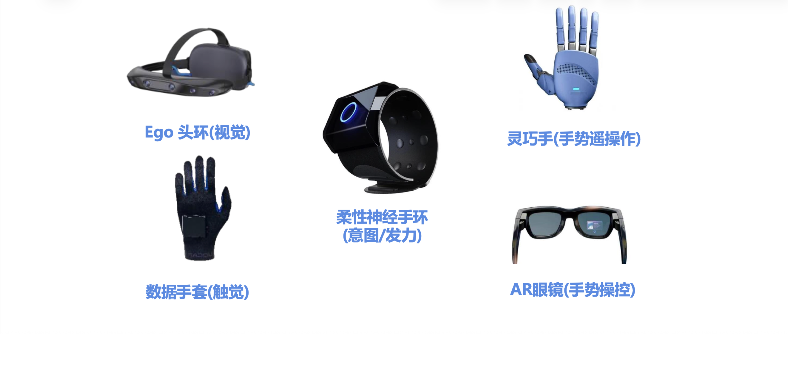

科技探索Tech Exploration
看见特殊儿童迫切地表达需求，聆听每次发声……
背后的回音、内心的真实、热烈……
See the urgent need of children with special needs to express themselves.
Listen to the echoes behind every voice—their inner truth and intensity.
在与特殊儿童长期的陪伴中，我们发现，他们并非没有表达，而是常常没有被及时理解。
于是我们开始探索结合原创 IP 与 AI 交互的陪伴产品，希望在日常沟通和表达练习中提供辅助。让孩子更容易说出口，也让家长和老师多一种理解他们的方式。
项目目前处于需求研究与原型验证阶段，不替代家长、教师与专业诊疗。
Through long-term companionship with children with special needs, we found that they are not without expression—their expression is simply not always understood in time.
We are exploring companion products that combine original IP with AI interaction to support everyday communication and expression practice, helping children speak more easily while giving families and teachers another way to understand them.
The project is currently in needs research and prototype validation. It does not replace parents, teachers or professional diagnosis and treatment.